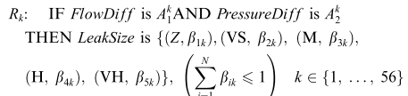
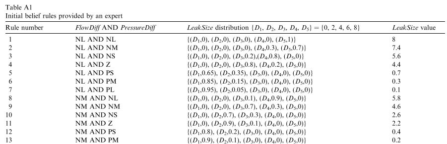
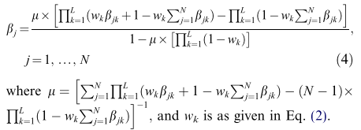
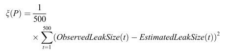
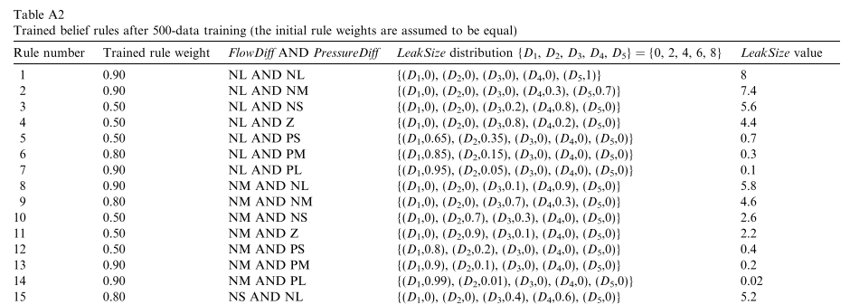
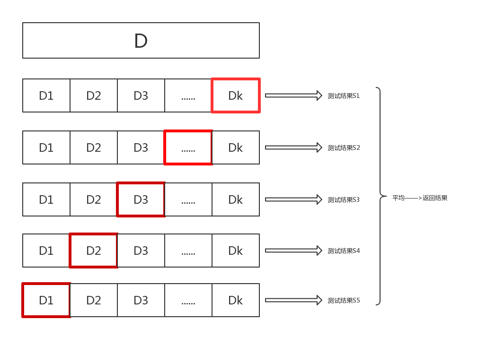
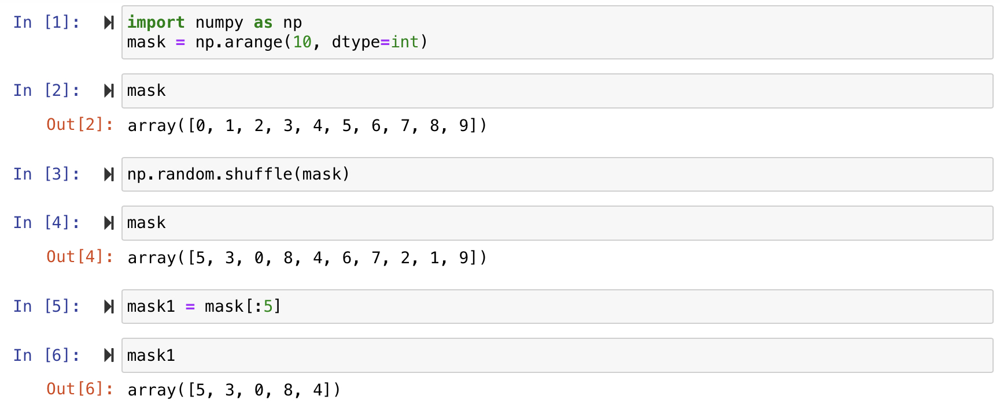
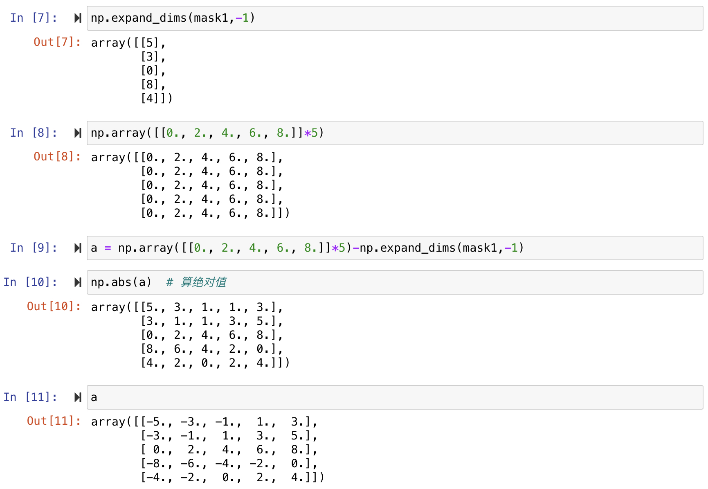
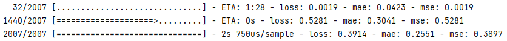
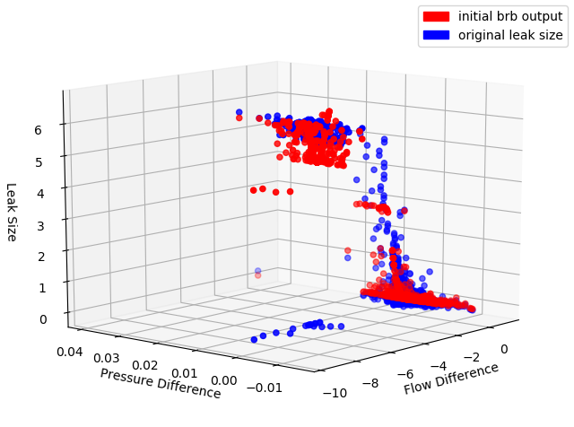

输油管道泄漏问题
一、问题简介
1.1 问题描述
当输油管道发生泄漏时，输油管道中油液的流量和压力会发生变化。因此，选择输油管道的流量差以及输油管道的平均压力差对泄漏大小进行估计。
在正常操作下，当入口流量大于 (或小于) 出口流量时，管道中的压力将增加 (或减少)，因为管道中的总含量分别增加 (或减少)。然而，如果违反了该模式，例如，如果入口流量大于出口流量，但是管线中的压力仍然降低，则很可能在管线中存在泄漏
1.2 数据说明
用FlowDiff表示的入口流量和出口流量之间的差异以及用PressureDiff表示的平均管道压力随时间的变化是检测管道是否存在泄漏的两个非常重要的因素
U 1 = F l o w D i f f ( t ) = f 1 ( t ) − f 0 ( t ) U_1 = FlowDiff(t) = f1(t)-f0(t)
U 1 = Fl o w D i ff ( t ) = f 1 ( t ) − f 0 ( t )
U 2 = P r e s s u r e D i f f ( t ) = [ p 0 ( t ) + ⋯ + p 9 ( t ) ] / 10 − [ p 0 ( t − 1 ) + ⋯ + p 9 ( t − 1 ) ] / 10 \begin{aligned}
U_2 &= PressureDiff(t)\\
&=[p0(t)+ \dots+ p9(t)]/10-[p0(t-1)+\dots+p9(t-1)]/10
\end{aligned}
U 2 = P ress u reD i ff ( t ) = [ p 0 ( t ) + ⋯ + p 9 ( t )] /10 − [ p 0 ( t − 1 ) + ⋯ + p 9 ( t − 1 )] /10
1.3 参考点的设置
用于每个前件的引用点的数量决定了规则库的大小。如果数量太大，则规则库中的规则太多，随后的训练和推理过程将更加苛刻。如果太小，则这些点可能无法覆盖前属性的值范围。对于常规规则库尤其如此。通常使用5-9个参考点。结果属性的引用点的数量也与前向属性的引用点的数量相当。
流量差
平均压力差
泄漏大小
NL = -10
NL = -0.01
NM = -5
NM = -0.005
NS = -3
NS = -0.002
NVS = -1
Z = 0
Z = 0
Z = 0
VS = 2
PS = 1
PS = 0.002
M = 4
PM = 2
PM = 0.005
H = 6
PL = 3
PL = 0.01
VH = 8
负大 (NL)，负中 (NM)，负小 (NS)，负极小 (NVS)，零 (Z)，正小 (PS)，正中 (PM) 和正大 (PL)。
零 (Z)，非常小 (VS)，中等 (M)，高 (H) 和非常高 (VH)
因为FlowDiff分为8个项和PressureDiff 7个项，所以在规则库中，有2个前因的56个组合导致了总共56个规则。
1.4 规则
使用语言术语或其等效的参考数值，泄漏检测和泄漏大小估计的常规规则之一可能如下:
1 2 IF FlowDiff is NL AND PressureDiff is NLis VH.
使用置信规则概念，常规规则可以扩展如下：

其中A 1 k , A 2 k A_1^k,A_2^k A 1 k , A 2 k
1.5 训练思路（文献中）
Step1：设置初始化参数
最初的置信度由专家给出，其中规则权重和属性权重都设为1

Step2：转换输入
将输入转换成输入值与参考值匹配的置信度
比如： F l o w D i f f ( t ) = { ( N L , 0.25 ) , ( N M , 0.75 ) } FlowDiff(t) =\{(NL,0.25),(NM,0.75)\} Fl o w D i ff ( t ) = {( N L , 0.25 ) , ( NM , 0.75 )}
因为-6.25 = NL * 0.25 + NM * 0.75 = -10 * 0.25 + (-5) * 0.75
1 == 0.25 + 0.75
Step3：计算规则激活权重
ω k = θ k ∏ i = 1 T k ( α i k ) δ i ∗ ∑ i = 1 L [ θ l ∏ i = 1 T l ( α i l ) δ i ∗ ] , δ i ∗ = δ i m a x i = 1 , 2 , … , T k { δ i } \omega_k=\frac{\theta_k\prod\limits^{T_k}_{i=1}(\alpha_i^k)^{\delta_i^*}}{\sum\limits^L_{i=1}\bigg[\theta_l\prod\limits^{T_l}_{i=1}(\alpha_i^l)^{\delta_i^*}\bigg]}\quad,
{\delta_i^*}=\frac{\delta_i}{\mathop{max}\limits_{i=1,2,\dots,T_k}\{\delta_i\}}
ω k = i = 1 ∑ L [ θ l i = 1 ∏ T l ( α i l ) δ i ∗ ] θ k i = 1 ∏ T k ( α i k ) δ i ∗ , δ i ∗ = i = 1 , 2 , … , T k ma x { δ i } δ i
Step4：组合激活的规则

使用IDS软件，组合激活的规则以产生以下结果：
O ( U ( t ) ) = { ( D j , β j ) j = 1. … , 5 } O(U(t))=\{(D_j,\beta_j)j=1.\dots,5\}
O ( U ( t )) = {( D j , β j ) j = 1. … , 5 }
[ D 1 , D 2 , D 3 , D 4 , D 5 ] = [ 0 , 2 , 4 , 6 , 8 ] [D_1,D_2,D_3,D_4,D_5]=[0,2,4,6,8] [ D 1 , D 2 , D 3 , D 4 , D 5 ] = [ 0 , 2 , 4 , 6 , 8 ]
Step5：估计泄漏大小
E s t i m a t e d L e a k S i z e ( t ) = D 1 β 1 + D 2 β 2 + D 3 β 3 + D 4 β 4 + D 5 β 5 EstimatedLeakSize(t)=D_1\beta_1+D_2\beta_2+D_3\beta_3+D_4\beta_4+D_5\beta_5
E s t ima t e d L e ak S i ze ( t ) = D 1 β 1 + D 2 β 2 + D 3 β 3 + D 4 β 4 + D 5 β 5
Step6：计算观察到的泄漏大小和估计的泄漏大小之间的差异

Step7：找到一组新的参数P，使差异最小化

二、代码分析
2.1 对数据进行处理
oil.data数据如下：
流量差
平均压力差
泄漏大小
-5.632500
0.000000
0.000000
-5.877500
-0.003001
6.210443
0.250000
0.000000
0.000000
1.100000
-0.006502
0.000000
-0.100000
0.001093
0.103121
对数据处理：
1 2 3 4 5 6 7 def dataset_oil ():with open ('../data/oil.data' ) as f:for i in f:list (map (float , i.split()))2 ]), y.append(z[-1 ])return np.array(x, dtype=np.float64), np.array(y, dtype=np.float64)
引入数据集：
1 data, target = dataset_oil()
2.2 设置常量
1 2 data_name, att_dim, res_dim = "oil" , 2 , 5 20 , 16 , 500 , 64
个人理解，att_dim表示输入数据的维度，也表示置信度的维度；res_dim表示输出结果的维度（5个标准）
experiment_num训练次数；rule_num选取训练数据的数量，产生置信规则epoch：1个epoch等于使用训练集中的全部样本训练一次batch_size：批大小，每次训练在训练集中取batch_size个样本训练
2.3 训练过程
1 2 3 4 5 for en in range (experiment_num): for _, _, train_data, train_target in kfold(data, target, 4 , 'numeric' , random_state=en):
2.3.1 KFold交叉验证
将原始数据分成K组（K-Fold），将每个子集数据分别做一次验证集，其余的K-1组子集数据作为训练集，这样会得到K个模型。最后把得到的K个实验结果进行平分
验证集：用于调超参数，监控模型是否发生过拟合（以决定是否停止训练）

2.3.2 training
1 2 3 model = training(train_data, train_target,
1 2 3 4 5 6 7 8 9 def training (x, y, rn, ad, rd, ep, bs ):with s.scope(): 1 , callbacks=[]) return model
tf.distribute.MirroredStrategy 是一种简单且高性能的，数据并行的同步式分布式策略，主要支持多个 GPU 在同一台主机上训练。
1、MirroredStrategy运行原理：
训练开始前，该策略在所有 N 个计算设备（GPU）上均各复制一份完整的模型
每次训练传入一个批次的数据时，将数据分成 N 份，分别传入 N 个计算设备（即数据并行）
使用分布式计算的 All-reduce 操作，在计算设备间高效交换梯度数据并进行求和，使得最终每个设备都有了所有设备的梯度之和，使用梯度求和的结果更新本地变量
当所有设备均更新本地变量后，进行下一轮训练（即该并行策略是同步的）。默认情况下，TensorFlow 中的 MirroredStrategy 策略使用 NVIDIA NCCL 进行 All-reduce 操作。
2.3.3 创建模型
1 model = create(rn, ad, rd, x, y)
1 2 3 4 5 6 def create (rn, ad, rd, x, y ):0 ], dtype=np.int ) abs (np.array([[0. , 2. , 4. , 6. , 8. ]] * rn) - np.expand_dims(y[mask], -1 )) return BRB(rn, ad, rd, xa, yb)
函数用途：


2.3.4 BRB系统
该BRB系统基于TensorFlow集成的keras库构建神经网络模型
代码如下：
1 2 3 4 5 6 7 8 9 10 11 12 13 14 15 16 17 18 19 20 21 22 23 24 25 26 class BRB (tf.keras.Model):def __init__ (self, rn, ad, rd, xa, yb ):super (BRB, self).__init__()1.0 , 0.01 ]] * rn, dtype=tdtype)0.0 , 2.0 , 4.0 , 6.0 , 8.0 ], dtype=tdtype)1e-10 , dtype=tdtype)def self_compile (self ):compile (optimizer=tf.keras.optimizers.Nadam(),'mse' ,'mae' , 'mse' ])def call (self, x, training ): 2 ))) 1 ))) 1 ), -1 )1 ) * tf.nn.softmax(self.b), 1.0 - aw 1 ), -2 ) - tf.expand_dims(tf.reduce_prod(md),1 ) + self.eps 1 ), -1 ) return tf.reduce_sum(pc * self.u, -1 )
首先了解tf.keras.Model的创建过程
tf.keras.Model类将定义好的网络结构封装入一个对象，用于训练、测试和预测
这里是通过继承Model类 进行实例化：
在这种方法中，我们需要定义自己的__init__并且在call方法中实现网络的前向传播结构（即在这个方法中定义网络结构）
例：
1 2 3 4 5 6 7 8 9 10 11 12 13 import tensorflow as tf class MyModel (tf.keras.Model): def __init__ (self ): super (MyModel, self).__init__() 4 , activation=tf.nn.relu) 5 , activation=tf.nn.softmax) def call (self, inputs ): return self.dense2(x)
2.3.4.1 定义__init__
构造函数，初始化要用到的层
1 2 3 4 5 6 7 8 9 def __init__ (self, rn, ad, rd, xa, yb ):super (BRB, self).__init__()1.0 , 0.01 ]] * rn, dtype=tdtype)0.0 , 2.0 , 4.0 , 6.0 , 8.0 ], dtype=tdtype)1e-10 , dtype=tdtype)
tf.Variable用于创建变量张量
xa表示随机选取了rn个样本（rn在主函数中定义为16）
yb表示对这rn个样本的输出进行数据处理，处理如下：
1 yb = -np.abs (np.array([[0. , 2. , 4. , 6. , 8. ]] * rn) - np.expand_dims(y[mask], -1 ))
tf.constant用于创建常量张量
对于c的理解，个人觉得可能是流量差与平均压力差的属性权重，类比于u
u在论文中有说明，为输出的五个评价等级{0,2,4,6,8}
2.3.4.2 配置训练模型
1 2 3 4 def self_compile (self ):compile (optimizer=tf.keras.optimizers.Nadam(),'mse' ,'mae' , 'mse' ])
optimizer：模型的优化方法loss：模型的损失函数metrics：训练和评价模型时使用的评价指标
mae ：绝对误差的平均值
M A E ( X , h ) = 1 m ∑ i = 1 m ∣ h ( x ( i ) ) − y ( i ) ∣ MAE(X,h)=\frac{1}{m}\sum\limits^m_{i=1}|h(x^{(i)})-y^{(i)}|
M A E ( X , h ) = m 1 i = 1 ∑ m ∣ h ( x ( i ) ) − y ( i ) ∣
mse ：均方误差
1 m ∑ i = 1 m ( y i − y i ∗ ) 2 \frac{1}{m}\sum\limits^m_{i=1}(y_i-y_i^*)^2
m 1 i = 1 ∑ m ( y i − y i ∗ ) 2
2.3.4.3 返回输出数据
这一部分不太理解，大概是对数据的预处理
在这种情况下，call 只是将图中的所有操作重新应用到新输入（例如，根据提供的输入构建一个新的计算图）
1 2 3 4 5 6 7 8 def call (self, x, training ): 2 ))) 1 ))) 1 ), -1 )1 ) * tf.nn.softmax(self.b), 1.0 - aw 1 ), -2 ) - tf.expand_dims(tf.reduce_prod(md),-1 ) + self.eps 1 ), -1 ) return tf.reduce_sum(pc * self.u, -1 )
tf.reduce_sum计算跨张量维度的元素总和
代码举例：
1 2 3 4 5 6 sess = tf.Session()1 ,2 ,3 ,4 ],[5 ,6 ,7 ,8 ],[9 ,10 ,11 ,12 ]],13 ,14 ,15 ,16 ],[17 ,18 ,19 ,20 ],[21 ,22 ,23 ,24 ]]] import numpy as np1 ) print (sess.run(c))
结果：
[[10 26 42]
[58 74 90]]
tf.expand_dims给定张量输入，此操作在输入形状的维度索引轴处插入大小为 1 的维度。维度索引轴从零开始；如果您为axis指定负数，则从末尾向后计数
1 2 3 4 t = [[1 , 2 , 3 ],[4 , 5 , 6 ]] 0 )1 )1 )
结果：
<tf.Tensor: shape=(1, 2, 3), dtype=int32, numpy=
<tf.Tensor: shape=(2, 1, 3), dtype=int32, numpy=
<tf.Tensor: shape=(2, 3, 1), dtype=int32, numpy=
2.3.5 fit
1 model.fit(x, y, batch_size=bs, epochs=ep, verbose=1 , callbacks=[])
2.4 返回训练结果
1 2 3 4 5 6 7 loss, mae, mse = model.evaluate(data, target) 0 ], data[:, 1 ], target, model.predict(data))1 print ("mse avg:%f mse now: %f" % (sum_mse / sum_cnt, mse))
第一次实验的第一折数据：

2.4.1 draw_3d
1 2 3 4 5 6 7 8 9 10 11 12 13 14 def draw3d_compare (x, y, z1, z2 ):'b' )'r' )'Pressure Difference' )'Flow Difference' )'Leak Size' )True )'r' , label='initial brb output' )'b' , label='original leak size' )'oil_compare_after.eps' , format ='eps' )
得出的对比图

二者重合度越高说明模型拟合效果越好，可以看出有部分样本拟合不够好
三、存在问题
未能对BRB的实现过程进行很好的分析